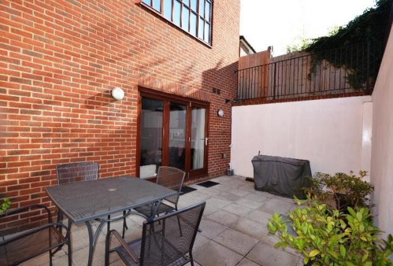
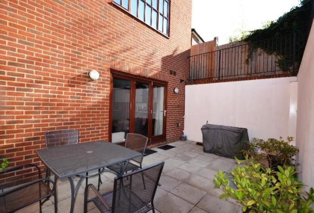
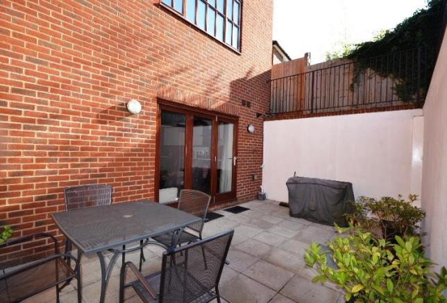

 


69 Babington Road, Streatham, SW16
 Stylishly presented two double bedroom split level maisonette with spacious accommodation laid out over the lower ground, ground and first floors of an attractive period style property. Features include a generous reception room with attractive wood flooring, separate well equipped, fitted kitchen, and modern downstairs bathroom. The property also benefits from own private entrance, private parking and an attractive private lawned garden to the rear.
Accommodation comprises entrance lobby with stairs down to a large bedroom with inbuilt cupboard and further door leading into the spacious reception room smartly presented, with wood flooring and feature turning staircase up to the first floor level. The separate kitchen, with double glazed window and further skylight bathing the room in plenty of natural light comprises a modern range of matching wall and base units with work surfaces incorporating single drainer sink unit, gas hob with overhead stainless steel extractor and oven below and ample space for appliances. There is also a tiled bathroom with window to the ground floor level, with white suite comprising panelled bath, wash basin and low flush WC. The lower ground floor level there is a further generous bedroom, currently laid out as another reception room and thereby offering excellent flexible room space. Further benefitting having it's own private garden and Share Of Freehold.
From the outside this house looks grandiose. It has been built with white stones and has tan stone decorations. Tall, squared windows brighten up the house and have been added to the house in a fairly asymmetrical pattern.
The house is equipped with a large kitchen and one large bathroom, it also has a huge living room, three bedrooms, a large dining area, a sun room and a small storage room.
The building is shaped like a squared S. The two extensions extend into glass overhanging panels circling around half the house.
The second floor is smaller than the first, which, in combination with its placement, creates an original look. This floor has a very different style than the floor below.
The roof is high and square shaped and is covered with slate shingles. Two small chimneys poke out the center of the roof. Several large windows let in plenty of light to the rooms below the roof.
The house itself is surrounded by a modest garden, with mostly grass, a few flower patches and a children's playground.
The property is conveniently located within easy access of Streatham station, providing excellent links into Central London and also close to an array of bus routes, shops, bars, restaurants, cafes and amenities on the high road. Both Tooting Bec (with popular Lido) and Streatham Common are close-by offering a pleasant open space away from the bustle of this excellent central location.